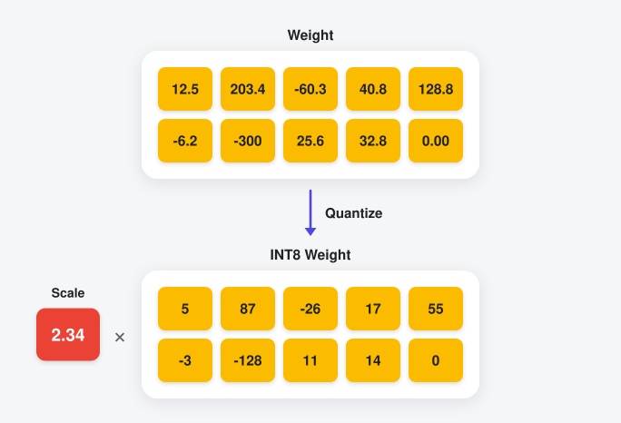
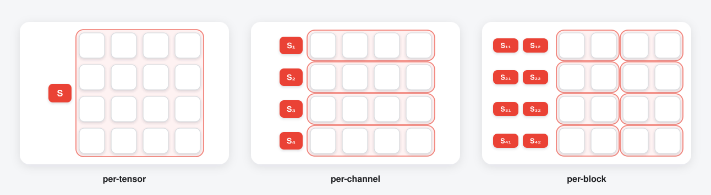

Basics¶
Quantization refers to the process of reducing the number of bits that represent a number. This process casts values from a float16 or float32 type to a dtype that uses fewer bits, such as an integer type (e.g. INT8, UINT8, INT4, etc.) or a lower-precision float type (e.g. FP8, FP4). Quantization can be applied to weights or activations (i.e. intermediate tensors) or both.
Quantization Formulae¶
The process of mapping the input float values to the quantized values involves computing what are typically referred to as quantization params: a scale parameter, and optionally either a zero-point or a minval. The quantization scale maps the FP16/FP32 input to the quantized range, such as the range for signed 8-bit integers [-128, 127].
Once the quantization params have been computed, the mapping is expressed by the following mathematical equations:
Scale only¶
# process of quantizing:
x_quantized = clamp(round(x_unquantized / scale), quant_min, quant_max)
# process of dequantizing:
x_unquantized = scale * x_quantized
To reduce the quantization error, the following two formulations can also be utilized.
Zero-point formulation¶
# process of quantizing:
x_quantized = clamp(round(x_unquantized / scale) + zero_point, quant_min, quant_max)
# process of dequantizing:
x_unquantized = scale * (x_quantized - zero_point)
minval formulation¶
# process of quantizing:
x_quantized = clamp(
round((x_unquantized - minval) / scale) + quant_min, quant_min, quant_max
)
# process of dequantizing:
x_unquantized = scale * (x_quantized - quant_min) + minval
In all these formulae, the quant_min and quant_max refer to the minimum and maximum values of the quantized dtype (e.g. [0, 15] for UINT4, [-448, 448] for FP8_E4M3FN). The round operation refers to rounding values to the nearest value in the quantized dtype’s domain.
To see more details, on how the quantization params are computed, and what defaults coreai-opt uses, refer to the API reference doc of QuantizationSpec.
{kind=link}

Process of quantizing to INT8 (scale only). Note that -300 (the max abs value) has been mapped to -128 (one of the endpoints of the INT8 range).¶
Quantization Granularity¶
The quantization params (scale, zero_point/minval) can be computed at various granularities when quantizing a given tensor.
per_tensor: a single value computed for the whole tensor
per_channel: multiple params for a tensor, one value shared along a specified axis (e.g.
output channelaxis for convolutional/linear layers)per_block: multiple params for a tensor, one value per block of values along the specified axis (size of the block controlled by the
block_sizehyperparameter).
per_channel and per_block help reduce quantization error, which often improves model accuracy, but at the cost of more space overhead for the quant params (and may affect the runtime latency depending on the model, hardware, etc.).
To see which axis is chosen as the default for common layer types, refer to the A Note on Granularity section.
{kind=link}

Different granularities supported for quantization.¶